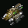
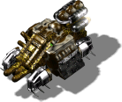

Горгона


Панель информации в игре
- Скорость:
- 80 км/ч?
- Энергия (HP):
- 1200
- Обзор:
- 600 м
- Время производства:
- 2 с
Затраты: Экстракт 120 Железо 10 Уголь 20 Титан 0
Описание
Человеческие силы часто оккупируют колонизированные нами планеты. Модификация имеющегося космического шаттла сделает доступными межпланетные перелеты, что даст возможность посылать на защиту наших недавно основанных колоний воинов и даже шагоходы. Он может также выполнять и задачи своего предшественника.
Связанное
- Требует
- Горгона
- Аналог другой стороны
- Горгона
Параметры конфигурации, которых нет в игре (6)
AILEVEL- 1
TURN_SPEED- 0.01
AIUNIT- AIUNIT_TRANSPORT
SOLDIER_TYPE- SOLDIERTYPE_UNKNOWN
INDEPENDENT- nigdy
TYPE- R_aHELIKOPTERstatek